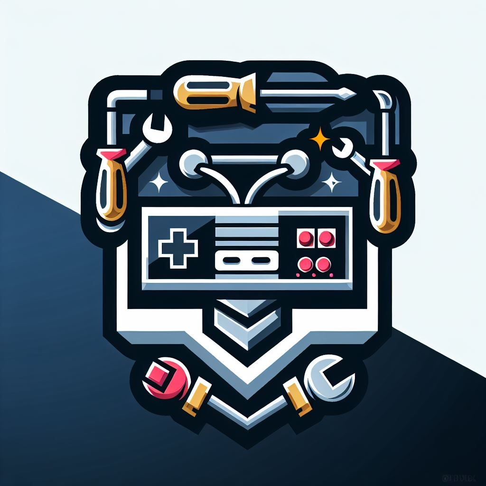

Overview
Purpose
We offer the repair services you need to preserve your favourite Retro consoles!
Audience
We speciallize in reparing consoles from the NES to the Playstation 3! we also offer many services for Modern consoles including the Recently released Switch 2!
Branding
Website Logo
Style Guide
Color Palette
| Primary | Secondary | Accent 1 | Accent 2 |
|---|---|---|---|
Typography
Heading Font: Droid Seref
Paragraph Font: Roboto
Normal paragraph example
Remember when games were built to last? I do—and I bring them back to life. I repair classic video game consoles like NES, Sega, and PlayStation, combining hands-on skill with a love for retro tech. My website showcases restorations, tutorials, and satisfied gamers. I'm not just fixing hardware — I'm preserving memories.
Colored paragraph example
Remember when games were built to last? I do—and I bring them back to life. I repair classic video game consoles like NES, Sega, and PlayStation, combining hands-on skill with a love for retro tech. My website showcases restorations, tutorials, and satisfied gamers. I'm not just fixing hardware — I'm preserving memories.
Navigation with Hover
Site Map
Wireframes
Home
Overview
Purpose
We specialize in restoring and repairing retro technology, ensuring that classic consoles, CD players, and televisions remain functional and ready to be enjoyed.
Audience
This site is for collectors, gaming enthusiasts, and tech lovers who cherish vintage electronics and need help maintaining or repairing their devices.
Content
Bringing Retro Tech Back to Life
In a world of ever-advancing technology, there's something timeless about vintage electronics. From the satisfying click of a cassette deck to the nostalgia-packed hum of an old CRT television, retro tech holds a special place in the hearts of collectors, gamers, and enthusiasts alike.
My website, Tyler Fixes Tech, is dedicated to preserving and repairing older technology, ensuring that classic devices continue to function just as they did decades ago. Whether you're seeking a repair for your beloved Nintendo Entertainment System (NES) or trying to revive a treasured CD player, this site provides helpful resources, services, and insights into the world of restoring classic electronics.
Why Will People Visit?
Visitors will come to my site because they want their old devices repaired, need troubleshooting advice, or simply love retro tech culture.
Common Questions Answered
- How can I repair my broken retro gaming console?
- What are common issues with older model televisions and how do I fix them?
- Are replacement parts available for older devices?
- What are the best techniques for cleaning and maintaining vintage electronics?
Activities Visitors Can Complete
- Read detailed articles about common tech issues and solutions.
- Access DIY repair guides and troubleshooting steps.
- Submit inquiries about repair services.
- Learn how to properly clean and maintain aging technology.
What Makes My Website Unique?
While there are plenty of tech repair websites, Tyler Fixes Tech focuses specifically on older electronics—devices that many mainstream repair shops no longer service. My hands-on experience and deep appreciation for retro hardware give my site a unique advantage, offering specialized guidance tailored to enthusiasts who want to preserve the original integrity of their classic gadgets.